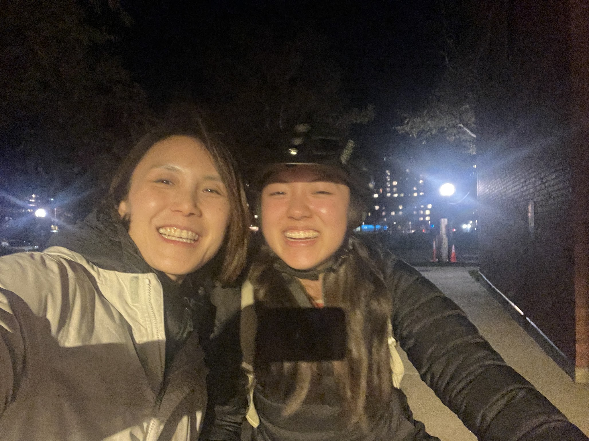
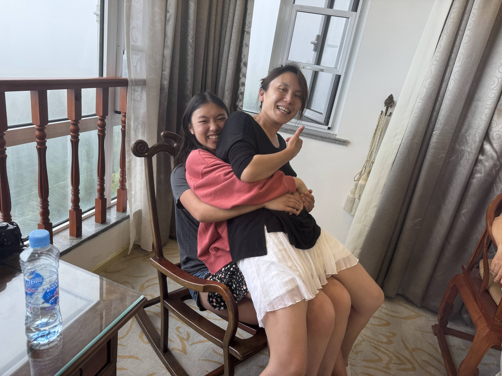
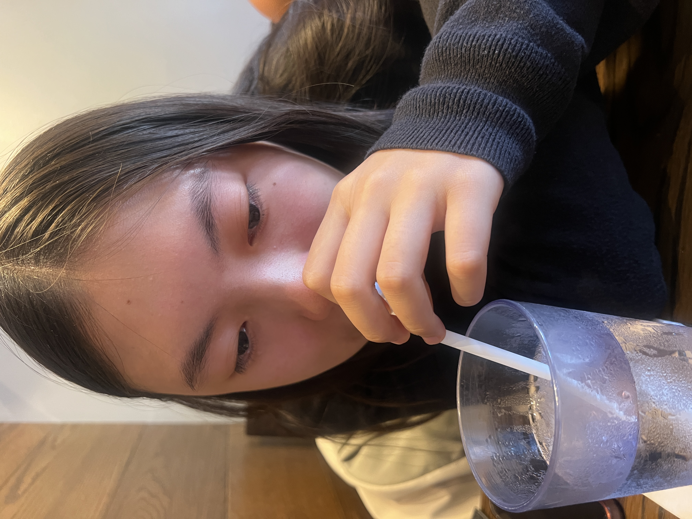
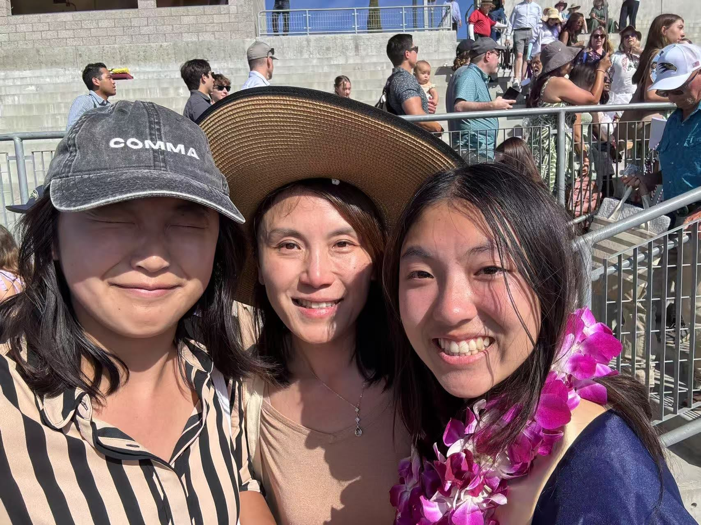
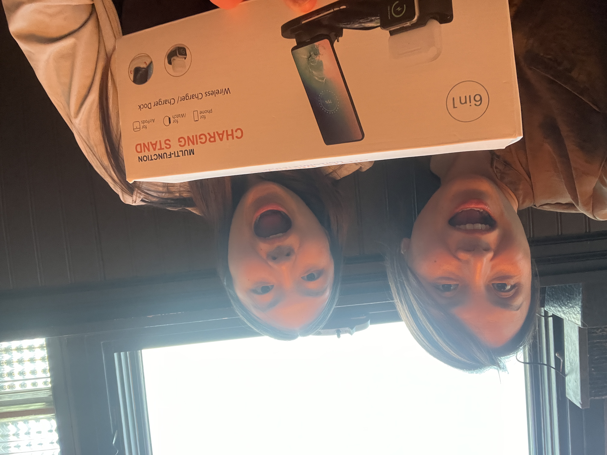
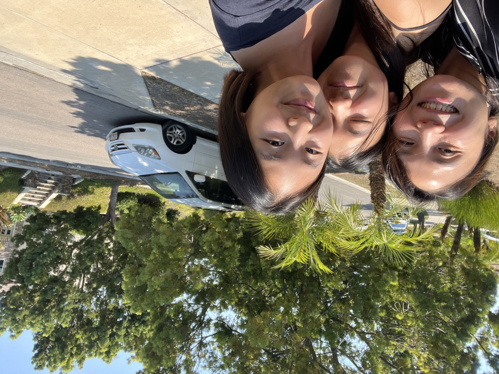
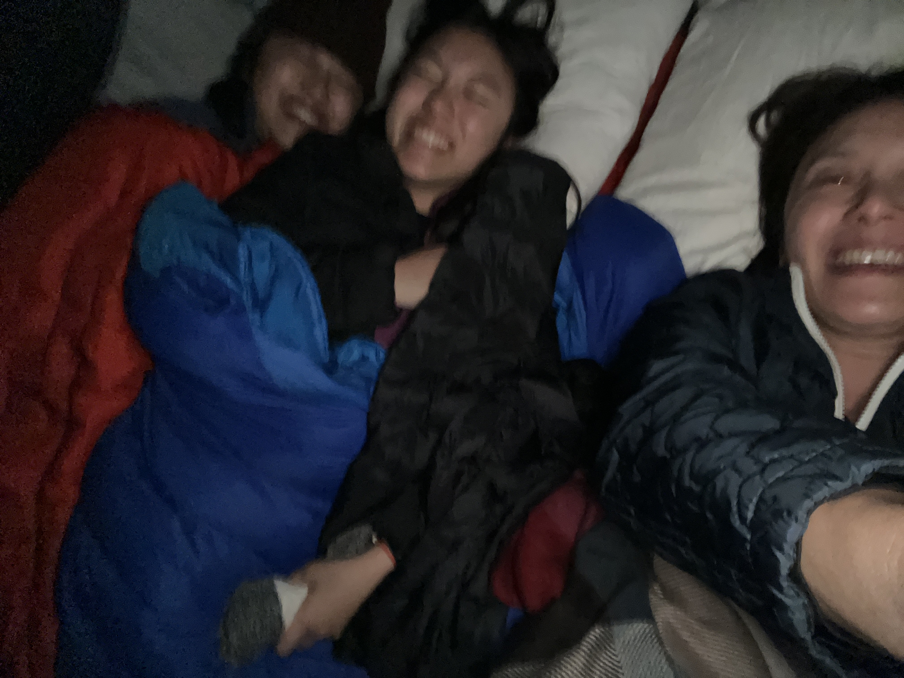

So much has changed in the past year; can you believe I'm in college now, and we are almost 3000 miles apart? Yet it doesn't feel that way at all - you are still just a text or call away.
I feel a wide range of emotions here: sometimes I feel so full of joy and gratitude I could burst,1 and other times (though much rarer) I feel the magnitude of the "firehose" of MIT and college.
Regardless, whatever it is, you're always the first person I want to talk to. I think I take this for granted- I'm so so so lucky to have a momo like you, who is there no matter what, who loves and is loved unconditionally, who inspires me endlessly with her kindness and humility and joy. And I don't tell you enough!
So thank you momo, for all the times you make me laugh, even when I try my hardest not to...2
 for being there every time I cry, even when I don't know why it is that I am crying...
 and for reminding me to be a kid, because with you I am forever a kid :)3
  fam! best frands
Happy birthday momo!!!! Wish I could be there to celebrate, but have lots of fun with elbo and TJ! Love you so much and don't forget to take care of yourself!4
lub, kibo
she's such a bean